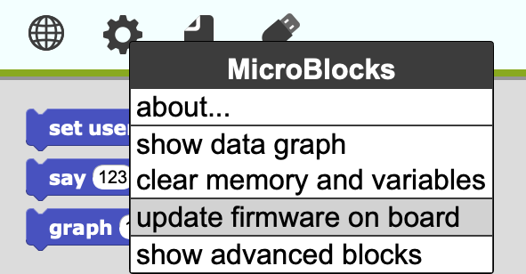

These notes are for users who want to work with MicroBlocks on ESP32 boards and are comfortable with the extra technical challenges involved.
The ESP32 is a module from Espressif Systems that combines a 32-bit dual-core processor with WiFi and Bluetooth functionality. Boards based on this module are available for around $11 on Amazon. OddWires makes a nice ESP32 board along with a family of add-on boards called the IoT-Bus Io. MicroBlocks is supported on several other ESP32 boards, including the ED1 board from Citilab in Barcelona and the M5Stack.
Install the serial driver, following the directions for your board here.
On Linux, install PySerial
and add yourself to the "dialout" group by running this in a terminal:
sudo usermod -G dialout -a `whoami`
The easiest way to install MicroBlocks on one of the supported boards is to use the MicroBlocks IDE.
Chromebook note: Currently it is not possible install the MicroBlocks firmware on ESP32 or ESP8266 boards from a Chromebook. However, a Windows, Mac, or Linux laptop can be used to install the MicroBlocks firmware, and then the board can be used with MicroBlocks on Chromebooks.
First, prepare your system following the instructions above and plug in your board. Then, select update firmware on board from the MicroBlocks menu:

The installation process usually takes 20-30 seconds. When it is done, the indicator should turn green. If it does not, try unplugging and replugging the board.
To verify that everything is working, try the following:

The user LED on your board should light up, showing that the board is connected. You're ready to code!
Note: If your LED doesn't light up it may be because your board uses a different pin for the user LED. You can use the "say" block to check that MicroBlocks is working.
Manually installing and MicroBlocks on ESP32 boards is more complex than using the IDE, but advanced users may find these instructions of interest.
To install MicroBlocks on an ESP32 board, you'll use a Python program called esptool.py. Different platforms use different commands to install Python programs. For Mac OS you can do the following:
sudo pip install esptool
Windows users might also try the Flash Download Tool (ESP8266 & ESP32) available here, although the MicroBlocks team has not tested that path.
A new ESP32 needs to have three firmware files installed in Flash memory before it will boot: some hardware settings, the second stage bootloader (the primary one is in ROM), and a Flash memory partition table. You can download those three files from here.
Important! Make sure the MicroBlocks IDE is not running before proceeding. It interferes with esptool.py.
Plug in your ESP32 board and run the following commands:
esptool.py erase_flash esptool.py -b 921600 write_flash 0x1000 bootloader_dio_40m.bin 0x8000 partitions.bin 0xe000 boot_app0.bin
It should find the correct serial port automatically. You'll see a bunch of stuff print in the terminal as the install happens. The entire process takes 40-60 seconds.
Note: Some ESP32 boards require that you hold down a button (often marked "prog") in order install firmware. Check the documentation for your board.
These files are fixed for a given ESP32 device, so once they've been installed you will usually not need to do this step again. You might need to reinstall the files if your Flash memory gets corrupted or, in some cases, if you program your board with another programming system (for example, one that uses an incompatible Flash partitioning).
Further details about what these files are used for can be found here.
Download the firmware for your your ESP32 board (e.g. Generic ESP32) from here. The downloaded file will end in .bin (e.g.vm.ino.esp32.bin).
Important! Make sure the MicroBlocks IDE is not running before proceeding. It interferes with esptool.py.
Plug in your ESP32 board and run:
esptool.py write_flash 0x10000 vm.ino.esp32.bin
Again, esptool should find the correct serial port automatically. You'll see a bunch of stuff print in the terminal as the install happens. The entire process takes 20-30 seconds.